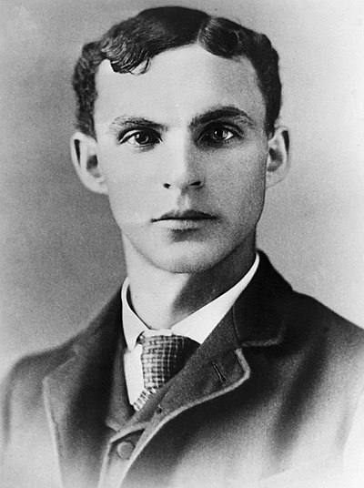

He was born into a family of immigrants from Ireland who lived on a farm near Detroit. When he was 16 years old, he ran away from home and went to work in Detroit. From 1891 to 1899, he served as a mechanical engineer, later chief engineer at the Edison Electric Company. In 1893, he designed his first car in his spare time. From 1899 to 1902 he was a co-owner of the Detroit Automobile Company, but due to disagreements with the other owners of the company, he left it and in 1903 founded his company - the Ford Motor Company, which originally produced cars under the Ford A brand.
